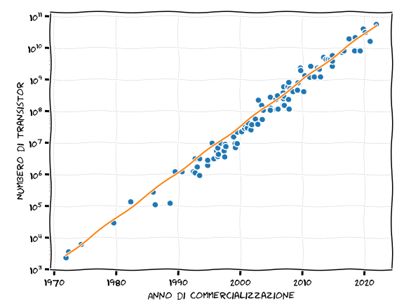
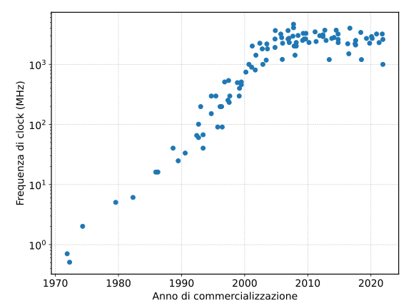
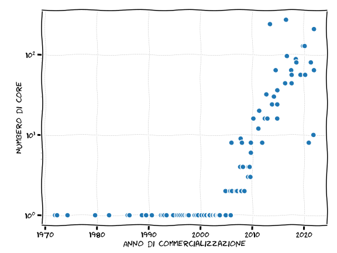

for i in range(100): print(i)
for i in list(range(100)): print(i)7 Dentro il calcolatore
Noi tutte, da Fisiche, siamo educate—e per buoni motivi—ad apprezzare l’importanza del principio di sovrapposizione caratteristico dei sistemi lineari: la forza totale agente su un punto materiale è la somma (vettoriale) delle forze agenti, ed il campo elettrico creato da un sistema di cariche è la somma (vettoriale) dei campi generati dalle singole cariche. L’elettronica digitale alla base del funzionamento di un calcolatore è un esempio archetipico di un tipo di sistema il cui funzionamento è dovuto alle caratteristiche intrinsecamente non lineari dei componenti—diodi triodi e transistor sono gli elementi circuitali che rendono possibile la computazione come lo conosciamo, e non andremmo molto lontano sfruttando solo la legge di Ohm che regola le reti lineari di resistenze.
7.1 Il flip-flop come base della logica sequenziale
Sotto molti punti di vista il mattone costitutivo fondamentale dei moderni calcolatori elettronici è il flip-flop, un elemento circuitale con due stati stabili (e.g., due livelli distinti di tensione in uscita) che si mantengono indefinitamente nel tempo se non si interviene sul dispositivo, e con la possibilità di cambiare lo stato attraverso uno o più opportuni segnali di controllo, tipicamente in modo sincronizzato con un segnale di clock esterno.
Ora: che un oggetto con due stati si presti ad essere usato come una sorta di alfabeto di due lettere per implementare una memoria digitale è abbastanza intuitivo; che i cambiamenti di stato si possano controllare dall’esterno è essenziale per poter fare operazioni sui dati in memoria; ed il fatto che il tutto sia controllato da una sorta di orologio esterno (il clock) lascia intravedere la possibilità che un numero arbitrario di flip-flop possano lavorare insieme, sincronizzati, per implementare operazioni complesse. Ma qual è il motivo per cui le architetture basate su flip-flop hanno resistito al test del tempo e non sono state soppiantate da approcci più complessi, basati su elementi circuitali a più stati—ad esempio un ipotetico flip-flop-flap a \(3\) stati? La risposta, in una parola, è la semplicità di realizzazione. Ideato negli anni ’\(10\) del 900 come sistema composto da due valvole, il flip-flop è evoluto dopo l’invenzione del transistor in uno degli elementi circuitali con la più alta impacchettabilità in chip. Una conseguenza fondamentale, ed il motivo per cui abbiamo cominciato la nostra discussione da questo aspetto apparentemente mondano dell’hardware, è il fatto che la totalità dei calcolatori moderni lavora in logica binaria, sia per quanto riguarda la rappresentazione dei dati che nella manipolazione dei dati stessi.
7.2 Bit e bytes
Ad un livello microscopico, l’informazione dentro un computer è immagazzinata in una serie di bit (b). Per usare un’analogia con la meccanica quantistica, il bit è il quanto di memoria, e ad ogni istante si trova in uno di due stati possibili: \(0\) o \(1\). (Strettamente parlando, non c’è niente di speciale nella scelta di utilizzare \(0\) e \(1\) come denominazione per i due possibili valori del contenuto di un bit—potremmo anche utilizzare vero e falso, bianco e nero, testa e croce—ma al solito non c’è ragione di non uniformarsi all’uso comune, che per di più, in questo caso, si sposa naturalmente con l’aritmetica in base \(2\).) All’interno di un calcolatore qualsiasi cosa è una serie di \(0\) ed \(1\). Programmi, dati, numeri, testo, immagini, video sono rappresentati internamente con l’opportuna alternanza di zero ed uno, come vedremo più in dettaglio nel seguito in alcuni casi rilevanti.
Ora, come abbiamo detto un bit ha due soli stati, e non c’è molto di utile che si possa fare con così poco. Le cose cambiano però drasticamente quando mettiamo insieme più bit—con \(2\) bit, ad esempio, possiamo comporre esattamente \(4\) bit pattern \[ \texttt{00} \quad \texttt{01} \quad \texttt{10} \quad \texttt{11}. \] La cosa è sostanzialmente identica al modo in cui, quando parliamo o scriviamo, componiamo le parole con le lettere dell’alfabeto. Non è difficile convincersi che, utilizzando \(n\) bit, il numero di bit pattern distinti che si possono rappresentare è \(2^n\). Con \(8\) bit, allora, possiamo rappresentare esattamente \(2^8 = 256\) configurazioni distinte—ad esempio i numeri interi da \(0\) a \(255\). Questo comincia ad essere un numero potenzialmente interessante: è più grande, ad esempio del numero di tasti di un pianoforte standard (\(88\)), e del numero di tasti di una moderna tastiera da calcolatore (\(104\) o \(105\)), e non è un caso che il protocollo MIDI e la codifica ASCII utilizzino entrambi \(8\) bit. I personal computer con processori a \(8\) bit sono stati estremamente popolari negli anni ’80, ed l’architettura a \(8\) bit si trova ancora usata in alcuni micro-controllori disponibili sul mercato. Un gruppo di \(8\) bit è un concetto così importante in informatica da meritare un nome dedicato: il byte (B). Se è vero che il bit è il quanto di memoria, in pratica il byte è l’unità di misura della capacità dei dispositivi di memorizzazione sul mercato.
Per inciso, gli informatici amano a tal punto le potenze di \(2\) che, sfruttando la coincidenza notevole che \[ 2^{10} = 1024 \approx 1000 = 10^2 \] hanno fornito una loro re-interpretazione in chiave binaria dei prefissi del sistema metrico internazionale. Così, tradizionalmente, l’unità kB è comunemente usata per indicare \(1024\) B (anziché \(1000\) B), il termine MB per indicare \(10124^2 = 1,048,576\) B, e così via. (La cosa non è bislacca come potrebbe sembrare: lo schema di indirizzamento tipico della memoria ad accesso casuale fa sì che, in pratica, la capacità di quest’ultima espressa in B sia per definizione pari ad una potenza di \(2\). L’interpretazione binaria dei prefissi del sistema metrico è stata, storicamente, sorgente di ambiguità, ma insistere oltre sulla questione va al di là dei nostri scopi.)
| Elemento | Capacità |
|---|---|
| Soldati di Giuseppe Ungaretti | \(44~\mathrm{B}\) |
| La Divina Commedia in formato testo | \(\sim 500~\mathrm{kB} \approx 5\times10^5~\mathrm{B}\) |
| Una canzone pop in formato MP3 | \(\sim 1~\mathrm{MB} \approx 10^6~\mathrm{B}\) |
| Memoria cache tipica di una CPU | \(\sim 1~\mathrm{MB} \approx 10^6~\mathrm{B}\) |
| Compact Disc (CD) | \(\sim 1~\mathrm{GB} \approx 10^9~\mathrm{B}\) |
| RAM tipica di un PC | \(\sim 10~\mathrm{GB} \approx 10^{10}~\mathrm{B}\) |
| Film in streaming (full HD) | \(\sim 10~\mathrm{GB} \approx 10^{10}~\mathrm{B}\) |
| Contenuto della biblioteca di Alessandria | \(\sim 50~\mathrm{GB} \approx 5 \times 10^{10}~\mathrm{B}\) |
| Disco rigido tipico di un PC | \(\sim 1~\mathrm{TB} \approx 10^{12}~\mathrm{B}\) |
| Contenuto di wikipedia (solo testo) | \(\sim 500~\mathrm{GB} \approx 5 \times 10^{11}~\mathrm{B}\) |
| Dati di LHC immagazzinati al CERN nel 2024 | \(\sim 1~\mathrm{EB} \approx 10^{18}~\mathrm{B}\) |
| Dati nel World Wide Web nel 2021 | \(\sim 100~\mathrm{ZB} \approx 10^{23}~\mathrm{B}\) |
Giusto per avere in mente gli ordini di grandezza, la Tabella 7.1 illustra le capacità tipiche di alcuni elementi di memorizzazione rilevanti per la nostra discussione. Non preoccupatevi se non avete mai sentito parlare di compact disk (lo studierete nel corso di archeologia) o se non sapete ancora cosa è la memoria cache di un processore (lo vedremo brevemente tra un attimo) e ricordatevi che si tratta di ordini di grandezza e non di numeri accurati al \(10\)%; il messaggio fondamentale è: quando lavorate con un calcolatore digitale la memoria che avete a disposizione non è infinita! Il fatto che il web abbia una capacità di immagazzinamento globale dell’ordine di un numero di Avogadro di byte ci sorprende da una parte per la grandezza del numero stesso, ma ci dice allo stesso tempo che una simulazione microscopica che dovesse seguire, molecola per molecola, una mole di gas (ovvero \(20\) miseri litri) sarebbe completamente fuori questione—oltre che inutile, come la meccanica statistica ci ha insegnato molto prima che esistessero i computer.
7.3 Struttura di massima di un calcolatore
Se aprite la pagina web del vostro sito di e-commerce preferito in cerca di un laptop, oppure andate in un negozio di elettronica, nella scheda tecnica del prodotto troverete invariabilmente una serie di parole chiave: processore (o CPU), cache, RAM, disco rigido, complementate da una serie di caratteristiche (e.g., la frequenza di clock) ed eventualmente da riferimenti alle tecnologie costruttive (e.g., DDR e SSD). Supponiamo di essere interessati all’acquisto di un laptop con queste ipotetiche caratteristiche
- Processore ACME X5-8400 (2.6 GHz, 8 core, 1 MB L1 cache)
- 16 GB DDR5 RAM (5600 MT/s)
- 1 TB SSD
Proviamo a cercare di orientarci in questa selva di cifre e numeri.
7.4 La CPU
Partiamo dalla CPU. Il processore di un computer è, in molti sensi, il cervello del calcolatore, ed è il responsabile dell’esecuzione dei programmi. Si tratta di un microprocessore, fisicamente realizzato nella forma di un sottile blocco di silicio di qualche cm\(^2\) di area, che coordina il flusso dei dai da e verso la memoria e le periferiche, e fornisce un insieme di istruzioni per eseguire operazioni aritmetiche e logiche su questi dati.
Il progresso delle prestazioni dei microprocessori, dalla loro introduzione all’inizio degli anni ’70 del 900 è stato niente meno che spettacolare. La Figura 7.1 mostra il numero di transistor impacchettati nei più diffusi microprocessori in funzione dell’anno di rilascio: l’andamento è approssimativamente esponenziale con un tempo caratteristico di duplicazione di circa tre anni—questa semplice osservazione va generalmente sotto il nome di legge di Moore. (Assicuratevi di capire cosa vuol dire in pratica: il numero di transistor in un tipico microprocessore è raddoppiato ogni 3 anni, senza sosta, per gli ultimi 50 anni. Impressionante, no?)

Così, se lo Zilog Z80 (che all’inizio degli anni ’80 del 900 equipaggiava alcuni tra i più diffusi micro-computer in commercio, come lo ZX Spectrum e la famiglia MSX) integrava circa \(8500\) transistor, le CPU di ultima generazione (nel 2026) viaggiano intorno alla fantasmagorica cifra di \(10^{11}\). Da fisiche quali siamo tutte, fermiamoci per un attimo a pensare cosa voglia dire integrare 100 miliardi di transistor su un’area di 1 cm\(^2\): la superficie occupata dal singolo dispositivo è dell’ordine di \(10^{-11}\) cm\(^2\), in che significa una dimensione lineare caratteristica di \(3 \times 10^{-6}\) cm, o 30 nm. (Avete capito bene, 30 nanometri.) Dato che le dimensioni atomiche tipiche sono dell’ordine di 0.1 nm, questo significa che un transistor di una moderna CPU è grande appena qualche centinaio di atomi. Se è vero che in cinquant’anni le dimensioni tipiche dei processi di integrazione si sono ridotte di un fattore \(10^4\), è altrettanto chiaro che il processo di scala non può continuare per molto a meno che non immaginiamo tecniche di produzione radicalmente diverse.
7.4.1 Frequenza di clock
Il numero di transistor in una CPU ci dà un’idea della complessità della circuiteria elettronica, ma non si traduce direttamente in un insieme di metriche che misurino la performance complessivo del dispositivo in termini pratici. Torniamo allora all’etichetta illustrativa con cui abbiamo aperto questo capitolo.
ACME X5-8400 è il nome fittizio che abbiamo dato al nostro processore, e non è molto interessante. Il primo numero (2.6 GHz), invece, in indica la frequenza di clock, ed è una metrica importante—anche se, da sola, non determina univocamente la velocità con cui la CPU può portare a termine un compito. Nel nostro quadretto naive, in cui sostanzialmente abbiamo descritto la CPU come un’immensa orchestra di flip-flop che si muovono in modo coordinato per eseguire task complessi, la frequenza di clock rappresenta sostanzialmente il tempo che la direttrice d’orchestra dà alle orchestrali con la bacchetta. E 2.6 GHz significa 2.6 milioni di battiti al secondo, ovvero sia un battito ogni 0.4 ns circa. Ora, non è facile capire cosa voglia dire veramente questo numero, ma è interessante notare che in 0.4 ns la luce (nel vuoto) percorre appena una decina di cm. La cosa non è da poco, perché si tratta dello stesso ordine di grandezza delle dimensioni tipiche di una CPU, per cui potete immaginare che, visto che niente viaggia più velocemente della luce (e la maggior parte delle cose, compresi i segnali elettrici, viaggiano ad una velocità significativamente inferiore) il problema di mantenere la sincronia durante la propagazione dei segnali sia tutt’altro che banale.

La Figura 7.2 mostra l’andamento nel tempo delle frequenze di clock nominali dei più diffusi microprocessori. Basta un’occhiata veloce per capire che qui la situazione è completamente diversa rispetto a prima. Se il nostro buon vecchio Zilog Z80 operava ad appena qualche MHz, le tipiche frequenze di clock non sono sostanzialmente aumentate negli ultimi 20, assestandosi intorno a \(2\)–\(5\) GHz. Certo il progresso è stato sostanziale—un fattore \(1000\)—ma la domanda sorge spontanea: qual’è il motivo per cui si è arrestato all’inizio del ventunesimo secolo, nonostante siamo diventate sempre più brave ad impacchettare transistor nei chip?
Trascurando i fattori sottodominanti, la risposta è semplice, e si tratta di una questione di termodinamica elementare: oltre una certa velocità diventa impossibile dissipare in modo efficace il calore generato dalla CPU. Se è vero che nei chip a tecnologia CMOS che sono onnipresenti nei nostri dispositivi elettronici la potenza consumata \(P\) è proporzionale alla frequenza di clock \(f\), è anche vero che in pratica aumentare la frequenza di clock di un microprocessore richiede tipicamente di aumentare la tensione di alimentazione, e, senza entrare nei dettagli, lo scaling completo della potenza è dato da \[ P \propto V^2 f. \] In altre parole, oltre qualche GHz la tecnologia corrente si scontra contro un vero e proprio muro che rende praticamente impossibile andare oltre. Eppure non vi è dubbio che i laptop di oggi siano più potenti di quelli di 20 anni fa. Dove sta il trucco?
7.4.2 Architettura della CPU
Come abbiamo detto, la frequenza di clock non è l’unico elemento che determina quanto velocemente una CPU può eseguire un’operazione—come potete immaginare l’architettura stessa della CPU riveste un ruolo fondamentale, e differenti architetture hanno differenti performance a parità di clock. (In altre parole: non potete giudicare un laptop da un solo numero.)
Per prima cosa, non è detto che serva esattamente un ciclo di clock per eseguire un’istruzione. (Esiste anche un nome per identificare la metrica di performance corrispondente: le istructions per cycle, o IPC.) Così, se i vecchi microprocessori come lo Z80 avevano un IPC di \(0.1\)–\(0.3\)—il che vuol dire che servivano diversi cicli di clock per eseguire una singola istruzione—le CPU moderne, esattamente al contrario, sono in grado di eseguire diverse istruzioni per ciclo di clock. Questo è uno dei meccanismi con cui le prestazioni complessive sono aumentate negli ultimi 20 anni anche se la frequenza di clock tipica è rimasta invariata.

Ma forse l’aspetto architetturale che più è cambiato negli ultimi due decenni è quello del parallelismo: la progressiva miniaturizzazione dei processi produttivi ha permesso di integrare su un singolo chip di silicio non più una, ma molte CPU. Se all’inizio degni anni 2000 sostanzialmente tutti i processori erano single core, adesso 8 o 16 core sono la norma anche per un laptop di classe media, mentre i processori più avanzati per server possono integrare più di 200 core. (Chiaramente come usare in modo efficiente un gran numero di core è un argomento che meriterebbe un corso a se stante, e va decisamente oltre lo scopo di questa breve introduzione.) E con questo abbiamo abbiamo, sia pur sommariamente, chiarito un altro dei numerini da cui siamo partiti. Non sappiamo ancora il significato di questa strana parola “cache”, ma rimandiamo per un attimo la discussione alla prossima sezione.
Prima di andare avanti, però, è utile notare che abbiamo messo insieme tutti gli ingredienti per definire il FLOP (floating point operations per second), che è una metrica di performance tipica per le applicazioni che richiedono la manipolazione di numeri in virgola mobile. (Si, siamo tutti chiamati in causa.) Se chiamiamo con \(n_c\) il numero di core nel nostro processore, il numero teorico di operazioni in virgola mobile al secondo può essere calcolato semplicemente come \[ \text{FLOPs} = n_c \times f \times \frac{\text{FLOPs}}{\text{cycle}}. \] Il nostro ipotetico computer di cui valutiamo l’acquisto, con una frequenza di clock di 2.6 GHz e 8 core, assumendo 10 operazioni in virgola mobile per ciclo di clock, si assesterebbe alla ragguardevole cifra di quasi \(2 \times 10^{11}\) FLOPs, o 200 GFLOPs. Per confronto, ENIAC, tradizionalmente considerato il primo computer digitale moderno, ed entrato in funzione nel~1945, operava a circa \(500\)~FLOP. I più grandi supercomputer raggiungono ormai gli EFLOPs (esa-FLOPs, o \(10^{18}\) FLOPs). Come abbiamo detto, con \(f\) più o meno costante, il progresso degli ultimi 20 anni è venuto sostanzialmente dagli altri due fattori della nostra espressione—l’aumento del numero di core e la maggior efficienza delle nuove architetture in termini di istruzioni per ciclo.
7.5 La memoria
La CPU è un oggetto utile solo nel limite in cui ha un continuo flusso di dati su cui operare e fare cose interessanti. E questi dati devono essere in memoria in qualche forma.
Per tornare alla nostra metafora della cucina, se la CPU rappresenta le pentole ed i fornelli, la memoria non è altro che tutto quello spazio fisico in cui conserviamo gli ingredienti necessari per il nostro piatto—il bancone, i pensili, il frigorifero, la cantina (se l’avete), il negozio sotto casa ed il supermercato. Per quanto spericolata, questa analogia ci fa capire in modo immediato un certo numero di cose. Ad esempio che ci sono diversi tipi di memoria con caratteristiche diverse—se ad un certo punto ci accorgiamo che ci manca un ingrediente, un conto è se lo abbiamo in figorifero, tutt’altro paio di maniche se dobbiamo lasciare tutto per andare al supermercato!
7.5.1 La RAM
Cerchiamo di capire se e come tutto questo sia rilevante per noi partendo, al solito, dalla nostra etichetta illustrativa iniziale: 16 GB DDR5 RAM (5600 MT/s). La densità di acronimi è tale da intimorire le deboli di cuore.
Le prima quattro lettere sono la parte facile: 16 GB, come ormai sappiamo bene, indicano \(1.6 \times 10^{10}\) B di memoria, ovverosia abbastanza per contenere 32,000 libri della lunghezza della divina commedia. Detto così, forse, non è molto impressionante, ma è interessante notare come, per una curiosa coincidenza, questo numero sia dello stesso ordine di grandezza del contenuto di informazione della Biblioteca di Alessandria—la più grande ed importante biblioteca dell’antichità, che al picco del suo splendore ospitava probabilmente svariate centinaia di migliaia di rotoli. Fermatevi per un attimo a pensare: tutto il contenuto del centro più importante della cultura ellenistica, disponibile in pochi mm\(^3\) di silicio, con un tempo di accesso che, come vedremo, è così piccolo da essere difficile da immaginare sulle scale umane.
Ma andiamo avanti. Se mettiamo per un attimo da parte l’acronimo DDR5 (ci torneremo tra un attimo) arriviamo a RAM che, come forse saprete, sta per random access memory. La traduzione italiana del termine (memoria ad accesso casuale), diciamolo, non è molto espressiva, perché ad una prima lettura “accesso casuale” assomiglia pericolosamente ad “accesso a casaccio”, che chiaramente non è quello che ci interessa. In questo contesto “accesso casuale” significa invece che il tempo di accesso ad una qualsiasi cella di memoria è indipendente da dove fisicamente si trova la cella in questione. L’accesso casuale, inteso in questo senso, è detto a volte, e forse in modo più espressivo, anche accesso diretto, ed è spesso contrapposto all’accesso sequenziale, tipico di quei dispositivi in cui i dati debbono essere estratti nell’ordine in cui sono stati inseriti, come avviene con un nastro magnetico. Tenetelo a mente perché si tratta di un concetto fondamentale che è rilevante anche in altri contesti, e.g., gli algoritmi e le strutture di dati.
Cosa vuol dire in pratica? Potete essere creative a piacere sul tema (guardate la Figura 7.4, as esempio), ma il dispenser delle spezie che qualcuna di voi avrà in cucina è un esempio di memoria ad accesso casuale—una decina di bellissimi barattolini messi in fila, con le etichette (magari ordinate alfabeticamente) in bella vista, ed il gioco è fatto: non importa se vi serve il curry o la curcuma, perché il tempo che occorre per allungare il braccio e prendere il barattolino è esattamente lo stesso. La cosa è interessante, perché la maggior parte dello storage che avete in cucina, purtroppo, non è ad accesso casuale; recuperare le cose che abbiamo messo in fondo al frigorifero o al pensile è più laborioso che recuperare le cose che stanno davanti—e, potenzialmente, molto più laborioso se dobbiamo cominciare a tirare fuori e rimettere a posto un sacco di cose. E come mai la tipica cucina non è tutta ad accesso casuale? Semplice, perché per mettere tutto il contenuto tenendo gli oggetti uno accanto all’altro in modo che siano tutti sempre a portata di mano servirebbe una cucina enorme. (Fermatevi un attimo a pensare; potete anche provare a casa.)
Bene, cominciamo ad inquadrare le caratteristiche fondamentali della RAM. La prima cosa è che l’accesso è veloce, e non dipende dalla particolare posizione in memoria. Chiaramente questa bellissima proprietà ha un prezzo: non è banale scalare la capacità oltre un certo limite. E, già che ci siamo: la RAM è tipicamente volatile, cioè l’informazione non è conservata quando spegniamo il calcolatore. Per uno storage persistente, come vedremo, serve una tecnologia diversa.
Una tipica memoria RAM moderna garantisce tranquillamente diversi miliardi di trasverimenti al secondo o, esprimendo la cosa in modo leggermente più barocco, migliaia di MT/s (mega transfers per second). Oh: ecco spiegato quel criptico 5600 MT/s: sono semplicemente 5.6 miliardi di trasferimenti al secondo, che corrispondono a circa 0.17 ns per il singolo trasferimento. (Cosa significa un trasferimento in termini di byte? Dipende dalle dimensioni del bus, ma per una tipica architettura moderna sono 64 bit, ovvero 8 Byte—quindi 5600 MT/s corrispondono a \(44.8\) GB/s. Non male: possiamo trasverire l’equivalente dell’intera biblioteca di Alessandria in qualche decimo di secondo.)
Esattamente come nella CPU, la sincronizzazione delle operazione sulla memoria è garantita da un clock. Perché allora in questo contesto parliamo di MT/s e non, come prima di frequenza di clock in MHz? Semplice, perché la moderna RAM DDR (double data rate) trasferisce dati due volte per ciclo di clock—specificamente, sul fronte di salita e sul fronte di discesa. E, con questo, abbiamo capito anche cosa vuol dire la parte “DDR” di “DDR5”. Per completezza, il 5 indica semplicemente la quinta generazione.
Nota
Non entreremo nemmeno superficialmente nella descrizione di come le memorie (più o meno) moderne sono fisicamente implementate da un punto di vista elettronico—per questo dovete aspettare il laboratorio del terzo anno. Le più attente tra voi avranno notato, però, che quando misuriamo la capacità di un banco di RAM, e.g., in GB, il valore numerico è quasi invariabilmente una potenza di \(2\). Questo deriva dal modo in cui la memoria è indirizzata, ovvero attraverso multiplexing e demultiplexing. In pratica una memoria RAM ha \(n\) linee di indirizzamento, e ad ogni combinazione di segnali di queste linee corrisponde una specifica locazione di memoria. Allora è chiaro che anche qui valgono tutte le regole che abbiamo detto a proposito di bit e byte, e con \(n\) segnali di controllo possiamo indirizzare \(2^n\) elementi distinti—avere un numero di celle elementari che non fosse una potenza di due sarebbe uno spreco!
7.5.2 La memoria di massa
Quali sono le differenze tra la memoria RAM e la memoria di massa? Abbiamo parzialmente rovinato la sorpresa all’inizio del capitolo, ma, ad altissimo livello, sono essenzialmente tre: la capacità del disco rigido è tipicamente più grande di quella della RAM, la velcità di accesso (e la banda di trasferimento) più piccola, e la memoria è di tipo persistente—ovverosia, i vostri dati su disco, grazie al cielo, non scompaio quando spegnete il computer.
Da un punto di vista microscopico queste differenze derivano dalle tecnologie costruttive. Voi siete troppo giovani per ricordare i tempi (erano gli anni ’80 del secolo scorso) in cui la musica non si ascoltava in streaming, ma con delle cassette a nastro magnetico. (Se avete mezz’ora da buttare e vi sentite ben disposte ad un momento di archeologia, provate a cercare su wikipedia due parole: walkman e VHS.)
Per molti anni l’archiviazione di massa nei calcolatori digitali è avvenuta esclusivamente attraverso l’uso di HDD (hard disk drive), dispositivi elettromeccanici contententi uno o più dischi magnetici su cui è possibile leggere e scrivere attraverso una apposita testina. Gli HDD hanno alcune buone proprità: permettono di salvare i dati in modo persistente (i.e., i dati sono preservati anche quando il disco non è alimentato), in grande quantità e ad un prezzo relativamente contenuto. Ma il modo in cui permettono l’accesso ai dati non è diretto come ne caso della RAM—il tempo necessario per arrivare ad una specifica cella di memoria dipende dalla posizione fisica di questa cella. La cosa non è sorprendente, perché, al contrario della RAM, l’accesso non avviene puramente attraverso segnali elettrici, ma richiede il movimento meccanico della testina. Se per un attimo ci rimettiamo il nostro cappellino da fisiche capiamo immediatamente che la differenza è fondamentale, perché ci spostiamo da un regime in cui il limite ultimo è la velocità della luce ad uno, molto più mondano, in cui le velocità tipiche sono quelle con cui possiamo spostare oggetti macroscopici senza danneggairli. Allora se vogliamo spostarci da una particolare locazione di memoria ad un’altra, il tempo necessario dipende da quanto fisicamente queste due locazioni sono distanti tra loro sul disco, perché la testina deve muoversi lungo questa distanza.
Come per tutte le cose, la tecnologia per lo storage di massa è migliorate ininterrottamente con il tempo, e lo sviluppo di solid state drive (SSD), dispositivi puramente elettronici di archiviazione, ha parzialmente colmato il gap tra la RAM e gli hard disk tradizionali. Le unità di memoria a stato solido non hanno parti in movimento, e garantiscono un tempo di accesso ed una banda di trasverimento dati significativamente migliori rispetto alla loro controparte tradizionale. Nonostante questo sono ancora almeno un ordine di grandezza più lenti della RAM, perché l’accesso ai dati non è veramente diretto. La Tabella 7.2 riassume in modo compatto i numeri fondamentali (al solito, vanno presi come puramente rappresentativi.)
| Characteristic | RAM | SSD / HDD |
|---|---|---|
| Persistenza | Volatile | Non volatile |
| Capacità tipica | 16 GB | 1 TB |
| Tempo di accesso tipico | 100 ns | 50 μs / 10 ms |
| Banda di trasferimento | 50 GB/s | 5 GB/s / 100 MB/s |
| Accesso casuale | diretto | attraverso un controller |
Abbiamo più o meno tutti gli ingredienti per capire il punto da cui siamo partiti: 1 TB SSD, no?
7.5.3 La cache
Siamo arrivati quasi alla fine di questa brevissima carrellata. Se torniamo alle nostre specifiche di partenza, l’unica porzione che non abbiamo ancora sviscerato è quel criptico 1 MB L1 cache, e adesso siamo pronti ad affrontare quest’ultima questione.
Quando eseguiamo un programma la prima cosa che il calcolatore fa è prendere fisicamente il contenuto del file eseguibile dal disco e copiarlo nella RAM. Il motivo, a questo punto, dovrebbe essere ovvio: se la CPU dovesse recuperare ogni singola istruzione dal disco, una alla volta, durante l’esecuzione, vivremmo in un mondo in cui i computer sarebbero infinitamente più lenti. Molto meglio copiare tutto all’inizio, e andarsi a prendere le istruzioni dalla RAM, che garantisce un accesso estremamente veloce.
L’analogia con la cucina, ancora una volta, ci viene in aiuto: quando vogliamo preparare il nostro piatto preferito, la prima cosa che facciamo è fare la spesa, cioè spostiamo gli ingredienti dal supermercato alla cucina. (Ricordate, in questa analogia il supermercato è la nostra memoria di massa—ha un sacco di spazio, ma la velocità di accesso non è gran ché—mentre la cucina è la RAM—piccola, ma con tutto a portata di mano). Pensandoci meglio, forse il lavoro di preparazione è un pochino più granulare: gli ingredienti che sappiamo ci serviranno nel momento clou della nostra creazione, oppure, più semplicemente, ci serviranno spesso (il sale? il pepe?) li spostiamo direttamente sul bancone in modo da averli a disposizione alla bisogna in un batter d’occhio.
E allora non sarebbe bello se la CPU avesse il suo piccolo spazio di memoria, magari piccolo, direttamente su chip, con un tempo di accesso tipico di 1 ns anziché i 100 ns della RAM? Ebbene, questo piccolo spazio di memoria esiste, e si chiama cache. (Anzi, nei moderni processori esistono tipicamente 2 o 3 livelli di chache che coprono il gap di accesso alla RAM in modo gerarchico, ma questo va oltre i nostri scopi). Che cos’è fisicamente la chache? Facile: una memoria ad accesso casuale, i.e., una RAM. E se è una RAM, cosa c’è di magico che rende l’accesso così veloce? Due cose: (i) la tecnologia costruttiva è tipicamente diversa (SRAM anziché DRAM, ma questo è un dettaglio tecnico in cui non abbiamo il tempo di addentrarci) e (ii) la cache è fisicamente più vicina alla CPU—anzi, essendo sullo stesso chip di silicio, potremmo dire che più vicina di così non potrebbe essere.
7.6 E quindi?
Giunte a questo punto, qualche commento finale è d’obbligo. Perché tutto questo dovrebbe essere importante per una fisica? E lo è ancora nel 2026? Perché, se è così impotrante, non me ne sono mai accorta?
L’infrastruttura tecnologica all’interno della quale ormai tutte viviamo è progettata esplicitamente per rendere sfumati i confini delle cose che memorizziamo in forma digitale, dandoci l’illusione di avere a disposizione risorse infinite. I computer con cui interagiamo più frequentemente (smartphone e tablet) sono fatti in modo da rendere difficile persino capire dove siano fisicamente gli oggetti—quando fate vedere i video dell’ultima vacanza alla vostra migliore amica, dove sono fisicamente i file? Sul telefonino? Sul cloud? In entrambi i posti, perché lo smartphone fa automaticamente una copia per voi? (Ci torneremo diffusamente nella prossima sezione.) E quando l’interazione con il dispositivo smette di essere fluida, è più probabile che cambiamo telefonino piuttosto che chiederci se effettivamente le 24 fotografie al risotto agli asparagi che abbiamo mangiato la sera prima valevano effettivamente lo spazio su disco.
Ebbene, fare un esperimento di fisica di frontiera è una cosa concettualmente diversa dall’archiviare le foto delle vacanze. A seconda della situazione, nella vostra vita professionale potreste trovarvi di fronte a sfide che definire impegnative è dir poco. Gli esperimenti del Large Hadron Collider (LHC) producono all’origine una mole di dati che si misura in decine di TB/s. Pensateci un attimo: si tratta di un numero così formidabile, che basta una rapida occhiata ai numeri che abbiamo discusso in questa sezione per capire che, nell’inviluppo della tecnologia attuale non c’è nessuna speranza di scrivere tutto su disco—non abbiamo né spazio, né banda. Qual è la soluzione? Ovvio, buttare via quasi tutto e scrivere solo la piccola parte di cose che potenzialmente ci interessa (facile a dirsi e difficile a farsi, perché capire cose ci interessa in tempo reale è un’altra sfida non da poco). E anche immaginando di scrivere su disco lo 0.1% di quello che produciamo, qualche GB/s, secondo dopo secondo, diventano 1 PB in una giornata. Cioè, centinaia di PB in un anno. È chiaro che qui la risposta al problema non può essere solo l’equivalente di “cambio il telefonino”, e.g. “compro più hard disk, e più veloci”.
Giusto per essere chiare: arrivate alla fine di questo capitolo non siete ancora pronte per progettare un esperimento di Fisica delle particelle, ed è estremamente improbabile che qualcuno ve lo chieda a breve. Ma se volete fare Fisica professionalmente dovrete imparate ad interagire con i calcolatori in modo diverso che con il telefonino. La memoria non è infinita. La velocità non è infinita. La banda non è infinita. Anche in un mondo che cambia velocemente come il nostro, non ci sono segni all’orizzonte che le cose che abbiamo detto smettano di essere rilevanti in futuro.
7.6.1 Una piccola provocazione
Esaminate attentamente le due righe di Python che seguono, descrivete le differenze e provate a capire le implicazioni nel limite in cui il numero di iterazioni nel ciclo for passa da \(100\) ad un numero molto grande, e.g., \(1,000,000,000\) (un miliardo).
Importante
Non guardate la soluzione prima di averci pensato almeno un po’ in modo indipendente. E, cosa ancora più importante, non esegute un miliardo di iterazioni sul vostro portatile prima di aver letto la soluzione.
Soluzione
L’unica differenza tra le due righe è la creazione esplicita di una lista nel secondo caso. Ma andiamo per ordine.
Se vogliamo iterare sui numeri interi (o su un loro sottoinsieme), da un punto di vista prettamente algoritmico non c’è nessun bisogno di precompilare una lista. Possiamo procedere per induzione, tenendo traccia del numero a cui siamo arrivati ed aggiungendo \(1\) ogni volta. Il nostro piccolo programma si può riscrivere senza usare nessun built-in di Python nella forma equivalente
i = 0
while i < 100:
i += 1
print(i)in cui è chiaro che l’unica memoria che stiamo utilizzando è quella necessaria per il singolo intero i.
Torniamo al programma originale. Contrariamente a quanto potreste pensare, il built-in range(100) non produce una lista dei primi \(100\) numeri interi. Tecnicamente produce un iterabile sul quale il ciclo for può agire esattamente come descritto nella versione alternativa del programma che utilizza il while. Non c’è nessuno spreco di memoria.
Quando invece scriviamo
list(range(100))le cose cambiano sostanzialmente: qui stiamo effettivamente allocando tutta la lista in memoria. Qual è il costo dell’operazione? Dobbiamo chiederci quanto occupa in memoria un intero
import sys
print(sys.getsizeof(1))28e moltiplicare per la lunghezza della lista. (La cosa è leggermente più complicata di così, ma questo è irrilevante per i nostri scopi.) Con \(100\) numeri sono circa \(3\) kB, i.e., niente di cui preoccuparsi. Ma con una lista di un miliardo di numeri la memoria necessaria diventa dell’ordine di \(30\) GB, che con ogni probabilità è abbastanza per esaurire la memoria RAM che avete a disposizione.
Cosa succede a questo punto? Dipende dal vostro setup. Se siete abbastanza fortunati il sistema operativo uccide indipendentemente il processo prima ancora che il ciclo for inizi e, a parte un messaggio di errore, non succede niente di grave. Ma in generale non provate nemmeno a fare l’esercizio in pratica se non siete disposti a riavviare il computer, perché la cosa è nel novero delle possibilità.
Cosa ci abbiamo imparato, e perché questo dovrebbe essere rilevante per la discussione? Beh, anche in un linguaggio di altissimo livello come Python, in cui non abbiamo un vero controllo sull’allocazione di memoria, è possibile ridurre in lacrime un calcolatore con una sola riga di codice.
Allora se a un certo punto della vostra vita doveste analizzare anche una piccolissima parte delle centinaia di PB di dati di LHC di cui dicutevamo prima—diciamo \(1\) TB—sarà bene che prima vi sediate un attimo per capire come leggerli, perché abbiamo capito che tutto in una volta non è possibile. In quel momento queste paginette vi saranno utili 😉